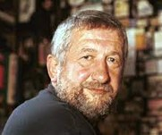

Jurgis Kunčinas
 Jurgis Kunčinas gimė 1947 m. sausio 13 d. Alytuje. Kartu su dar dviem broliais augo mokytojų šeimoje, mokėsi tuometinėje Alytaus 2-ojoje vidurinėje. Vilniaus universitete studijavo vokiečių kalbą, bet studijų nebaigė – buvo pašalintas iš ketvirto kurso. Dirbo pačius įvairiausius darbus: ligoninės sanitaru, kroviku, žurnalistu, bendrabučio auklėtoju, vertėju gamyklose ir įvairių leidinių redakcijose. Bet dažniau vaikščiodavo gatvėmis, skverais ir parkais – stebėjo gyvenimą, buvo gyvenimo metraštininkas. Sovietinei sistemai paklusti nenorėjo, todėl jo gyvenimas buvo gana sudėtingas, tačiau rašytojas niekuo nieko nekaltino. Po Lietuvos Nepriklausomybės paskelbimo prasidėjo kūrybingiausias rašytojo gyvenimo laikotarpis. Išleistos 7 poezijos, 7 apsakymų, apysakų knygos, 7 romanai , 4 kitų žanrų kūriniai, daugybė publikacijų periodikoje, išversta daugiau kaip 20 kūrinių iš vokiečių kalbos. Rašytojas 1993 m. pelnė Lietuvos rašytojų sąjungos premiją už geriausią metų knygą „Tūla“, šis romanas išverstas į septynias užsienio kalbas, yra vienas iš programinių kūrinių mokyklose. Net daugybę metų pragyvenęs Vilniuje, J. Kunčinas Alytų laikė vieninteliais tikraisiais savo namais. 2002-ųjų Frankfurto knygų mugėje, kurios svečias buvo Lietuva, iš visų mūsų autorių Kunčino žvaigždė žibėjo ryškiausiai. Jam buvo pranašaujama sėkmė Vokietijoje ir kitur, tačiau tų pačių metų gruodį rašytojas netikėtai mirė.
Kūryba
Kunčinas parašė 7 romanus: „Glisono kilpa“, „Tūla“, „Blanchisserie, arba Žvėrynas-Užupis“, „Kilnojamosios Röntgeno stotys“, „Kasdien į karą: La strada“, „Bilė ir kiti“, „Pjūti fjūūt! arba Netiesų dvaras“. Kunčinas taip pat išleido 6 poezijos rinkinius – „Takas per girią“, ‚Atidėtas rugsėjis“, ‚Liepų ratas“, „Labas, sraige, kur eini?“, „Atgimimo kryžius“, „Namai be žiburių“, 7 apsakymų rinkinius – „Vaizdas į Mėnulį“, „Baltųjų sūrių naktis“, „Menestreliai maksi paltais“, „Didžiosios Žiurkės šešėlis: vieno miestelio istorijos“, „Laba diena, pone Enrike!“, „Niekieno namai: Alytaus novelės“, „Užėjau pas draugą: trumpi apsakymai“, 4 publicistikos ir satyros rinkinius – „Vainikas „soscinei“: apybraižos“, „Ašutai iš Gyvenimo Švarko: liūdnos satyros“, „Laisvė yra brangi: satyros, memuarai, įspūdžiai“, „Grožio niekad negana: satyros“. Taip pat rašė radijo pjeses bei kino scenarijus.
Atminimo įamžinimas
Jo kūrybos galima pasiklausyti LRT mediatekoje, „Vakaro lyrikoje“.
Rašytojo vardas suteiktas Alytaus viešajai bibliotekai, kas antri metai jam atminti čia rengiamas literatūrinis festivalis „Imbiero vakarai“, išaugintas iki tarptautinio lygmens, o kūrybos populiarinimui sukurta virtuali biblioteka „Jurgio Kunčino tekstai“ (parengė Ilona Krupavičienė). Autorių galime atminti Malūno gatve, minima jo kūrinyje „Malūnų gatvė be malūnų“.
Galerija